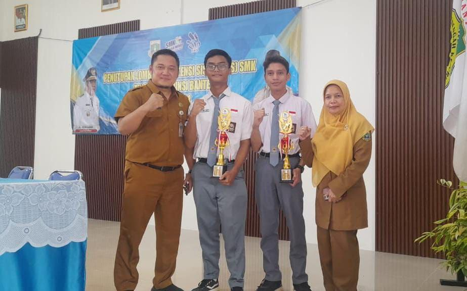
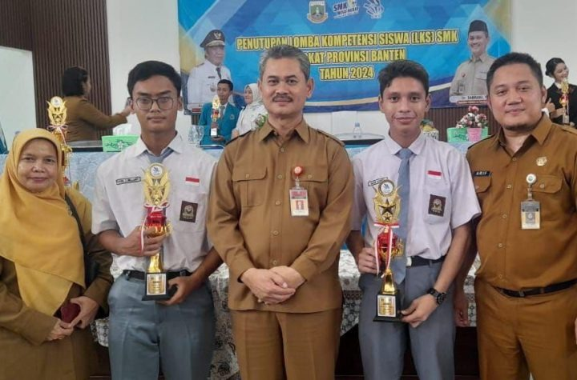

Juara LKS Tingkat Provinsi Bidang
Lomba ITNSA & Web Technologies
Senin, 7 September 2026

SMKN 1 muncul sebagai pemenang tak terbantahkan dalam ajang Lomba Kompetensi Siswa (LKS) Tingkat Provinsi Banten di bidang ITNSA (Information Technology Network System Administration) & Web Technologies. Kemenangan ini bukan hanya sebuah pencapaian biasa, tetapi juga cerminan dari dedikasi, kerja keras, dan keahlian yang luar biasa dari para siswa dan pendukungnya.
Dibawah komando kepemimpinan yang kuat dari Bapak Arif Prio Wibowo, M.Pd, Kepala Sekolah SMKN 1, sekolah tersebut telah meneguhkan posisinya sebagai pusat keunggulan dalam pendidikan di wilayah Banten. Beliau telah memimpin sekolah dengan visi yang jelas dan komitmen yang kuat untuk memastikan setiap siswa mendapatkan pendidikan yang berkualitas dan memenuhi standar internasional.

Tidak hanya itu, keberhasilan SMKN 1 dalam ajang LKS ini juga didukung oleh dua sosok pendamping yang sangat berperan, yaitu Bapak Heru Prasetiawan, M.Kom., dan Budi, S.Si., M.Kom. Dengan pengalaman dan pengetahuan mereka yang luas di bidang ITNSA & Web Technologies, mereka telah membimbing dan memberikan arahan kepada para siswa sehingga mampu bersaing dan meraih prestasi yang gemilang.
Kemenangan SMKN 1 tidak hanya sekadar sebuah trofi atau medali, tetapi juga sebuah tiket menuju tingkat nasional. Kini, dengan membawa nama baik Provinsi Banten di pundaknya, SMKN 1 siap untuk menghadapi tantangan lebih besar di tingkat nasional. Dukungan dari seluruh pihak, termasuk pemerintah daerah, lembaga pendidikan, dan masyarakat, menjadi modal utama dalam mewujudkan prestasi yang lebih tinggi lagi.
Prestasi ini juga menjadi inspirasi bagi seluruh siswa dan sekolah di Banten untuk terus mengembangkan potensi dan keahlian mereka di bidang ITNSA & Web Technologies. Melalui kompetisi dan semangat persaingan yang sehat, diharapkan dapat lahir lebih banyak lagi generasi penerus yang mampu bersaing di tingkat nasional maupun internasional.
Dengan penuh harapan dan optimisme, mari kita dukung SMKN 1 dalam perjalanan mereka menuju tingkat nasional. Semoga prestasi ini menjadi awal dari perjalanan yang lebih gemilang dan menjadi inspirasi bagi generasi mendatang.
|
Tautan eksternal
- Website Rapa
- Github
- Wikipedia
- W3Schools
|